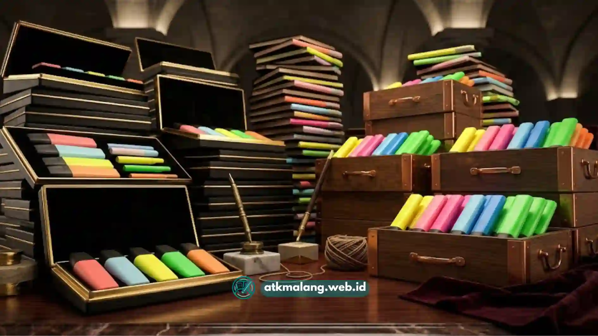

Grosir spidol highlighter Malang yang tepat adalah yang menyediakan produk asli dari merk terpercaya seperti Stabilo Boss dan Joyko, dengan harga bersaing sesuai jumlah pembelian.
- Pastikan toko grosir menjual produk asli, bukan tiruan dengan kemasan mirip
- Bandingkan harga grosir berdasarkan jumlah minimal pembelian atau lusinan
- Perhatikan variasi warna dan tipe ujung tinta yang tersedia
- Cek reputasi toko melalui ulasan atau riwayat transaksi sebelumnya
- Sesuaikan pilihan merk dengan kebutuhan, sekolah, kantor, atau reseller
Daftar Isi
Mengapa Memilih Grosir Spidol Highlighter yang Tepat Itu Penting?
Bagi pemilik toko alat tulis, sekolah, atau kantor yang membutuhkan stabilo dalam jumlah besar, memilih grosir yang tepat memengaruhi kualitas produk dan efisiensi biaya.
Membeli dalam jumlah besar dari sumber yang kurang terpercaya berisiko mendapatkan produk tiruan yang tintanya cepat kering atau warnanya tidak konsisten antar batang.
Selain itu, harga grosir yang wajar biasanya sebanding dengan kualitas dan keaslian produk dari distributor resmi.
Harga yang jauh di bawah pasaran untuk merk ternama seperti Stabilo Boss patut dicurigai, karena bisa jadi bukan barang asli.
Oleh karena itu, temukan toko grosir Alat Tulis Kantor yang terjamin reputasinya agar investasi produk lebih aman.
Apa yang Perlu Diperhatikan Saat Mencari Grosir Spidol Highlighter di Malang?
Hal utama yang perlu diperhatikan adalah keaslian produk, kelengkapan varian warna, serta kejelasan harga berdasarkan jumlah pembelian.
Beberapa poin yang bisa dijadikan pertimbangan:
- Keaslian produk: Pastikan kemasan, logo, dan detail cetakan sesuai dengan produk resmi dari merk terkait.
- Variasi warna dan tipe: Toko grosir yang baik biasanya menyediakan berbagai warna serta tipe ujung tinta, seperti chisel tip dan fine tip.
- Skema harga grosir: Perhatikan apakah harga berlaku per lusin, per pak, atau per boks besar.
- Ketersediaan stok: Untuk kebutuhan rutin seperti sekolah atau kantor, stok yang konsisten menjadi faktor penting.
- Reputasi toko: Ulasan pembeli sebelumnya dapat menjadi indikator awal kualitas layanan.
Kelima poin ini membantu memastikan pembelian dalam jumlah besar tetap memberikan nilai yang sesuai dengan biaya yang dikeluarkan.

Pastikan Anda selalu mendapatkan produk asli dari distributor resmi agar kualitas terjamin.Apa Perbedaan Stabilo Boss dan Joyko?
Stabilo Boss dan Joyko sama-sama merupakan merk spidol highlighter yang umum digunakan, namun keduanya memiliki karakteristik yang sedikit berbeda.
Perbedaan tersebut terlihat dari segi tinta dan desain bodinya. Secara umum, perbedaan yang sering disebutkan pengguna meliputi:
- Stabilo Boss dikenal dengan bentuk badan pipih yang membuatnya tidak mudah menggelinding di atas meja, serta tinta yang cenderung tahan lama.
- Joyko umumnya menawarkan pilihan harga yang lebih terjangkau dengan variasi warna yang cukup lengkap, cocok untuk kebutuhan sehari-hari.
Pemilihan antara keduanya biasanya kembali pada kebutuhan dan anggaran, karena masing-masing merk memiliki basis pengguna tersendiri.
Bagaimana Cara Memastikan Produk yang Dibeli Asli?
Cara paling dasar untuk memastikan keaslian produk adalah membeli dari toko atau distributor yang memiliki reputasi jelas.
Produk yang resmi umumnya dilengkapi dengan kemasan dari pabrik. Beberapa langkah yang bisa dilakukan:
- Perhatikan detail cetakan logo dan tulisan pada badan stabilo, produk asli biasanya memiliki hasil cetak yang rapi dan tidak mudah pudar.
- Bandingkan harga dengan kisaran harga pasaran, harga yang jauh lebih murah dari umumnya patut diwaspadai.
- Tanyakan langsung kepada penjual mengenai sumber atau distributor resmi produk yang dijual.
- Perhatikan konsistensi warna tinta antar batang dalam satu lusin atau boks.
Langkah ini meminimalkan risiko mendapatkan produk tiruan, terutama saat membeli dalam jumlah besar untuk keperluan jangka panjang.
Tips Berbelanja Grosir Spidol Highlighter secara Efisien
Agar pembelian grosir lebih efisien, ada beberapa hal yang bisa dipersiapkan sebelum melakukan pemesanan dalam jumlah besar.
Pertama, tentukan kebutuhan warna dan tipe ujung tinta terlebih dahulu sesuai penggunaan, misalnya untuk sekolah, kantor, atau dijual kembali.
Kedua, bandingkan beberapa toko grosir Alat Tulis Kantor untuk melihat skema harga dan minimal pembelian yang paling sesuai.
Tanyakan kebijakan retur atau penggantian jika ditemukan produk cacat dalam satu batch atau kardus.
Pertimbangkan juga untuk membeli dalam jumlah bertahap terlebih dahulu untuk menguji kualitas sebelum memesan dalam skala besar.
Memilih grosir spidol highlighter di Malang sebaiknya tidak hanya berdasarkan harga termurah, tetapi juga mempertimbangkan keaslian produk, varian, dan reputasi toko.
Baik memilih Stabilo Boss maupun Joyko, kunci utamanya adalah memastikan produk asli dan sesuai kebutuhan Anda.